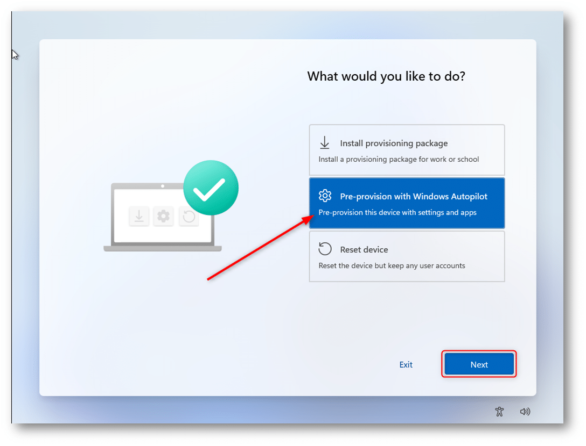
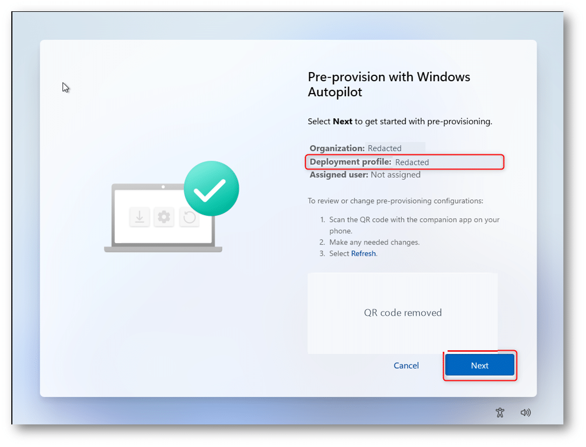
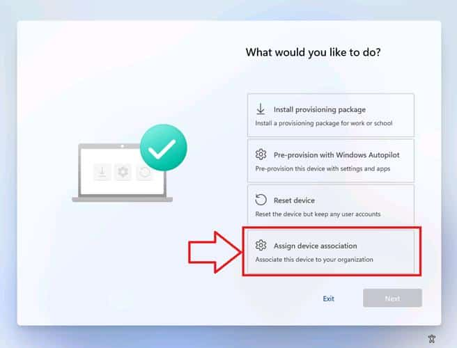
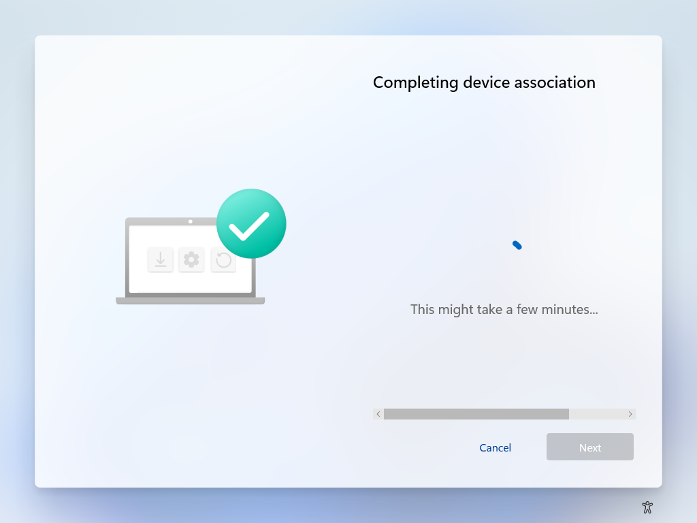
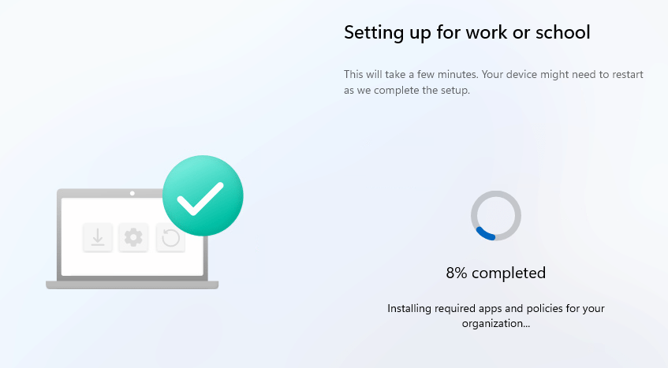
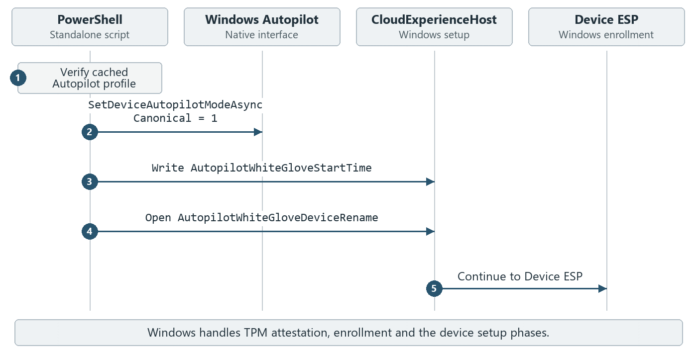
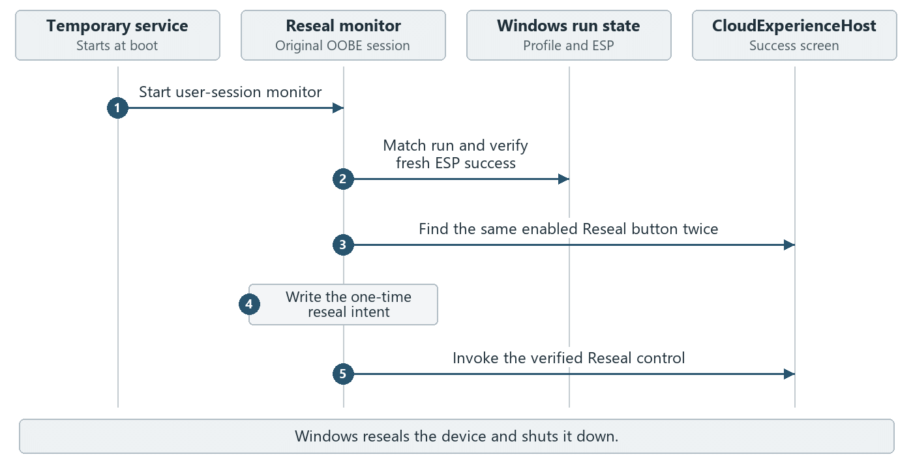

At MMS Midway I got the same question a couple of times. Could we automate Autopilot pre-provisioning? So that got me curious… I wanted to see if I could run one PowerShell command and come back to a device that had already resealed (when succesfull) and shut down.
What is Autopilot Pre-provisioning
Windows Autopilot pre-provisioning, also called White Glove and the Technican Phase, lets IT prepare a device before handing it to its user. Windows enrolls the device in Intune, installs device apps, and applies settings while the Enrollment Status Page (ESP) tracks Device Preparation and Device Setup. Once IT reseals it, the user can turn it on, sign in, and finish their part of setup. My White Glove walkthrough
Pre-Provision WIth Windows Autopilot Manually
1. Open Pre-provision
With the registered device connected to the network during Windows setup (OOBE), press the Windows logo key five times. Choose Pre-provision with Windows Autopilot and select Next. Microsoft’s technician flow

2. Confirm the Autopilot profile
The next screen shows the organization and deployment profile that Windows found. Check that they match what you expect, then select Next to start.

3. Wait for Autopilot setup and select Reseal
Let Windows finish Device Preparation and Device Setup. It can restart along the way. When the green success screen appears, select Reseal. Windows shuts down the device for handoff. And yes we got back the green screen!!!
Where the idea came from
Those five key presses reminded me of Device Association in Windows Autopilot Device Preparation. I had already written a PowerShell script to collect the device information, register it with Intune, and let Windows finish the association. Could I take the same approach for classic Autopilot pre-provisioning? My Device Association script



How the Autopilot Pre-Provisioning script works

The Autopilot Pre-Provisioning Automation PowerShell script checks the profile and hands the device over to Windows setup.
1. Check Windows setup and the assigned profile
Before it changes Autopilot mode, the script confirms it is on the Windows setup desktop and that the device is ready for a new run. It checks the installed CloudExperienceHost files, the path between the setup screens, and the Windows interface it needs to switch modes. A Windows update can change any of those pieces. Running the script without -Execute runs these checks and saves a diagnostic report.
Windows downloads the assigned Autopilot profile during OOBE and keeps a local copy. PowerShell waits for that copy to be ready, then checks the profile name, tenant details, device registration ID, and Microsoft Entra join type. The script gets the tenant details from the profile and saves a fingerprint of the assignment so it can recognize the same profile after a restart.
2. Start the normal Windows setup
PowerShell switches Autopilot to Canonical (mode 1) for Microsoft Entra join and reads it back to confirm the change. It writes the White Glove start time and opens the device naming step in Windows setup. From there, Windows handles TPM attestation, Intune enrollment, and the Enrollment Status Page (ESP).
The script saves its progress as it goes, then looks for the live Enrollment Status Page to confirm the handoff. If a failure occurs before the handoff and the mode change has finished, the script can remove its own start time and restore the starting mode. If the mode change is still pending or Windows may have taken over, the script records the state for review.
3. After Windows restarts

The monitor picks up the same run after reboot and presses Reseal when setup succeeds.
4. Pick up again after a restart
The scheduled task I tried first stayed queued after reboot. With -AutoReseal enabled, the script sets up a temporary Windows service before setup begins. After reboot, the service waits for the same OOBE account to become active, then starts the monitor in that account’s desktop session so it can read the setup screen.
5. Check for success and reseal
The monitor matches the Windows success result to the saved start time and compares ESP with the status it saved before setup. Both Device Preparation and Device Setup need fresh success results. On my test device, UI Automation found Reseal in the setup window, so the monitor checks there as well as on the result page.
When it sees the same enabled button twice in a row, the monitor records the attempt on disk before pressing it. That record limits the run to one automatic attempt across restarts. Windows then reseals and shuts down.
The temporary service tries to unregister when it sees the run is over. If shutdown happens first, it can finish cleanup on a later boot. The original script and the run logs stay available for troubleshooting.
Using the script in a staging workflow
On a staging bench, I would make this one step in the setup workflow. Have your staging tool place the standalone PowerShell file on the device before OOBE. The file already contains the helpers it needs.
Get the device ready
Use a network-connected physical device with TPM 2.0 and working device attestation. Register it in classic Windows Autopilot, assign a Microsoft Entra join profile that allows pre-provisioning, and target an Enrollment Status Page (ESP) profile. Microsoft’s pre-provisioning requirements
Run the script with no script options on a test device in OOBE to validate the image before using it on the bench. This release checks Windows 11 build families 26200 and 26300, the reviewed Windows setup components, and English (US) resources. Automatic reseal also uses the installed .NET Framework compiler to build its temporary service.
Launch it once during OOBE
Configure your staging tool to run this once when the device is online and the interactive OOBE desktop is active. Launch it under the OOBE account in that session using elevated 64-bit Windows PowerShell 5.1. This example uses a file staged in C:\temp.
$helper = ‘C:\temp\Invoke-AutopilotCanonicalBackendPreProvisioning-Standalone.ps1’
powershell.exe -NoProfile -STA -File $helper -Execute -AutoReseal
The script waits for Windows to cache the assigned profile and reads the tenant from it. -Execute starts pre-provisioning. -AutoReseal sets up the monitor so it can pick up the run after a reboot.
Follow the run
If the launch command returns exit code 0, the script confirmed that Windows reached ESP. The monitor runs independently and can continue after a reboot ends the launch process. If a device stays on the green screen, run the same command in OOBE in read-only mode with -CheckReseal in place of -Execute -AutoReseal and check the report’s Blockers field.
On my physical Windows 11 test device with a Microsoft Entra join profile, Windows restarted, the green screen appeared, and a few seconds later the laptop sealed and shut itself down.
Why automate the technician flow
One launch in OOBE starts pre-provisioning with the device’s assigned Autopilot profile. Windows handles enrollment, and the monitor picks up after a restart. Once it confirms that Device Preparation and Device Setup succeeded for this run, it presses Reseal and Windows shuts down the device for handoff.
I can see this coming in handy for IT teams staging a batch of laptops, MSPs preparing devices for different customers, and OEMs or resellers getting devices ready to ship. The technician only needs to run the PowerShell script and doesn’t need to go through the steps to start the pre-provisioning